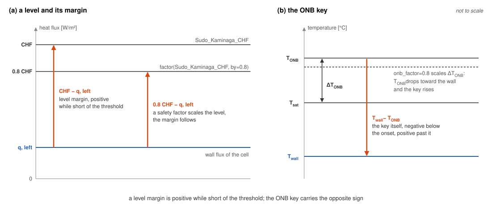
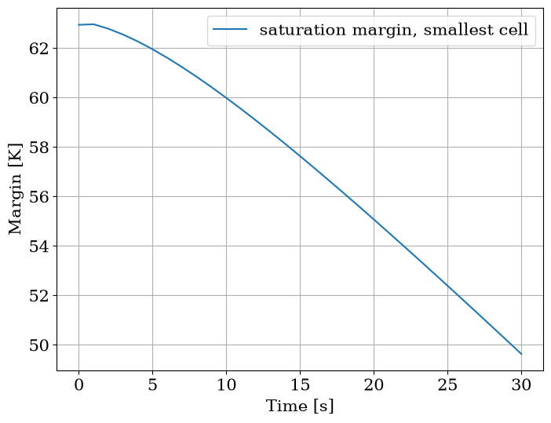

Compute margins
Read results reads a saved state by name. This page adds boiling limits to one, on the pair of Build a plate, an assembly or a rod, at steady state and over a short coastdown. Thresholds tabulates the limits, their correlations and their references.
[1]:
from functools import partial
import matplotlib.pyplot as plt
import numpy as np
from matplotlib import rc
rc("font", family="serif", size=15)
from stream.analysis.thresholds import (
Bergles_Rohsenow_T_ONB,
Sudo_Kaminaga_CHF,
Whittle_Forgan_OFI,
threshold_analysis,
transient_threshold_analysis,
)
from stream.calculations import ChannelAndContacts, Fuel, Solid
from stream.calculations.channel import Direction
from stream.composition import symmetric_plate, symmetric_plate_steady_state, uniform_x_power_shape, x_boundaries
from stream.physical_models.heat_transfer_coefficient import spl_htc, wall_heat_transfer_coeff
from stream.physical_models.pressure_drop import friction_factor, pressure_diff, rectangular_laminar_correction
from stream.physical_models.thresholds import saturation_margin
from stream.pipe_geometry import EffectivePipe
from stream.substances import light_water
from stream.utilities import factor
The pair, solved
The cell rebuilds the pair, solves it at 0.5 kg/s and saves the state; its aggregator binds the coastdown \(\dot m(t) = \dot m_0 / (1 + t / 20\,\mathrm{s})\) for later. Every wrapper but twall_limit reads static_pressure, which a channel saves only when p_abs is bound.
[2]:
length, width, cells = 0.7, 0.070, 10
clad_N, fuel_N, clad_w, meat_w = 2, 8, 0.0005, 0.0006
z = np.linspace(0.0, length, cells + 1)
meat = np.zeros((cells, fuel_N + 2 * clad_N), dtype=bool)
meat[:, clad_N:-clad_N] = True
fuel = Fuel(
z_boundaries=z,
x_boundaries=x_boundaries(clad_N, fuel_N, clad_w, meat_w),
material=Solid.from_array(np.where(meat, Solid(3500, 750, 40), Solid(2700, 900, 167))),
y_length=width,
power_shape=uniform_x_power_shape(cells, fuel_N, clad_N, clad_w, meat_w, length),
meat_indices=meat,
name="Plate",
)
pipe = EffectivePipe.rectangular(length=length, edge1=width, edge2=0.0022, heated_edge=width)
aspect_ratio = pipe.depth / pipe.width
h_spl = spl_htc("regime_dependent", re_bounds=(2000.0, 5000.0), Lh=length, aspect_ratio=aspect_ratio)
f = friction_factor("regime_dependent", re_bounds=(2000.0, 5000.0), k_R=rectangular_laminar_correction(aspect_ratio))
channel = ChannelAndContacts(
z_boundaries=z,
fluid=light_water,
pipe=pipe,
h_wall_func=partial(wall_heat_transfer_coeff, h_spl=h_spl),
pressure_func=partial(pressure_diff, f=f),
name="Channel",
)
mdot0, p_abs, power, T_in = 0.5, 1.8e5, 25e3, 38.0
steady = symmetric_plate_steady_state(channel, fuel, mdot=mdot0, p_abs=p_abs, power=power, Tin=T_in)
funcs = {channel: dict(mdot=lambda t: mdot0 / (1 + t / 20.0), p_abs=p_abs, Tin=T_in), fuel: dict(power=power)}
agr = symmetric_plate(channel, fuel, funcs=funcs).to_aggregator()
y = agr.load(steady)
state = agr.save(y)
print(f"channel power: {state['Channel']['power'] / 1e3:.2f} kW")
print(f"peak heat flux: {state['Channel']['q, left'].max() / 1e3:.1f} kW/m²")
channel power: 25.00 kW
peak heat flux: 394.2 kW/m²
The channel carries the plate’s 25 kW, and its flux peaks at about 394 kW/m².
The thresholds on a state
threshold_analysis(**funcs) returns an analyser, analyzer(state, agr, name), that looks the channel up by name, calls every function with the channel’s saved state and its fluid, pipe and dz by keyword, and writes each result under its keyword into a deep copy. The functions come from stream.analysis.thresholds; the same name imported from stream is the raw correlation, which takes physical arguments and fails here with a TypeError on the keyword state.
Bergles_Rohsenow_T_ONB and Saha_Zuber_OSV require a direction, the wall they read, bound with partial.
[3]:
onb = partial(Bergles_Rohsenow_T_ONB, direction=Direction.left)
analysed = threshold_analysis(ONB=onb, CHF=Sudo_Kaminaga_CHF, OFI=Whittle_Forgan_OFI)(state, agr, "Channel")
new = sorted(set(analysed["Channel"]) - set(state["Channel"]))
print(f"new keys: {new}")
print(f"input state changed: {'CHF' in state['Channel']}")
new keys: ['CHF', 'OFI', 'ONB']
input state changed: False
Three keys arrived in the copy; the saved state is untouched.
Levels and margins
Most wrappers return a level; the ONB wrapper returns the margin itself.
Wrapper |
Returns |
Margin |
|---|---|---|
|
critical flux per cell [W/m²] |
level minus the wall flux |
|
void-onset flux per cell [W/m²] |
level minus the wall flux |
|
flow-instability power [W] |
level minus |
|
saturation power per cell [W] |
level minus |
|
hotter wall temperature per cell [°C] |
to a design limit |
|
\(T_{wall} - T_{ONB}\) per cell [K] |
the key itself |
Each correlation holds over the range its docstring states: Fabrega_CHF for flows below 0.5 m/s, Mirshak_CHF above 1.5 m/s. A level margin is positive while the channel is short of the threshold; the ONB key is negative below the onset of nucleate boiling and positive past it, so the worst cell has the smallest level margin and the largest ONB key. On a plain Channel, which saves no wall flux, twall_limit returns minus infinity without a warning.

In (a) a safety factor scales the level, the margin follows; in (b) ``onb_factor=0.8`` lowers :math:`T_{ONB}`, and the ONB key rises.
[4]:
c = analysed["Channel"]
print(f"CHF margin, worst cell: {(c['CHF'] - c['q, left']).min() / 1e6:.3f} MW/m²")
print(f"OFI margin: {(c['OFI'] - c['power']) / 1e3:.1f} kW")
print(f"ONB key, worst cell: {c['ONB'].max():.2f} K")
CHF margin, worst cell: 1.280 MW/m²
OFI margin: 117.3 kW
ONB key, worst cell: -55.14 K
The pair is far from the three limits computed here: about 1.28 MW/m² below the critical flux, about 117 kW below the flow excursion, and its wall about 55 K below boiling onset.
A safety factor
factor(f, by=k) from stream.utilities multiplies what f returns by k: on a level wrapper it scales the level. On the ONB key it would scale the margin, so that wrapper takes onb_factor, which multiplies the superheat in \(T_{ONB} = T_{sat} + \Delta T_{ONB}\). inhomogeneity_factor, on the ONB, OSV and wall-temperature wrappers, multiplies the local flux, a hot-spot factor.
[5]:
scaled = threshold_analysis(
CHF_80=factor(Sudo_Kaminaga_CHF, by=0.8),
ONB_80=partial(Bergles_Rohsenow_T_ONB, direction=Direction.left, onb_factor=0.8),
)(state, agr, "Channel")["Channel"]
print(f"CHF margin at 0.8 CHF: {(scaled['CHF_80'] - c['q, left']).min() / 1e6:.4f} MW/m²")
print(f"ONB key at 0.8 of superheat: {scaled['ONB_80'].max():.2f} K")
CHF margin at 0.8 CHF: 0.9453 MW/m²
ONB key at 0.8 of superheat: -53.85 K
Both factors move the threshold toward the channel: the CHF margin falls from about 1.28 to about 0.945 MW/m², and the ONB key rises from about -55.1 to about -53.9 K.
Over a transient
transient_threshold_analysis(**funcs) applies the same analyser at every time of a history, the dict that agr.save(sol) returns. Any function with that keyword signature can be a key: here saturation_margin(T_bulk, T_sat) from stream.physical_models.thresholds at the static pressure, the margin a ChannelAndContacts built with stop_at_saturation=True watches as an event. The cell runs 30 s of the coastdown.
[6]:
def subcooling(*, state, fluid, **_):
return saturation_margin(state["T_cool"], fluid.sat_temperature(state["static_pressure"]))
sol = agr.solve(y, np.linspace(0.0, 30.0, 31))
history = transient_threshold_analysis(SAT=subcooling, ONB=onb)(agr.save(sol), agr, "Channel")
sat = np.array([history[t]["Channel"]["SAT"].min() for t in sol.time])
onb_t = np.array([history[t]["Channel"]["ONB"].max() for t in sol.time])
print(f"saturation margin at 0 s and 30 s: {sat[0]:.1f} K, {sat[-1]:.1f} K")
print(f"ONB key at 0 s and 30 s: {onb_t[0]:.1f} K, {onb_t[-1]:.1f} K")
fig, ax = plt.subplots(figsize=(8, 6))
ax.plot(sol.time, sat, label="saturation margin, smallest cell")
ax.set_xlabel("Time [s]")
ax.set_ylabel("Margin [K]")
ax.grid()
ax.legend()
plt.show()
saturation margin at 0 s and 30 s: 62.9 K, 49.6 K
ONB key at 0 s and 30 s: -55.1 K, -29.7 K

As the flow falls the smallest saturation margin drops from about 63 K to about 50 K; the wall moves faster, its ONB key rising from about -55 K to about -30 K.
Both Pumps Trip follows the saturation margin of the hottest plate through an hour. How many cells along the plate measures how that margin moves with the axial mesh, the next question to ask of a margin before quoting it.